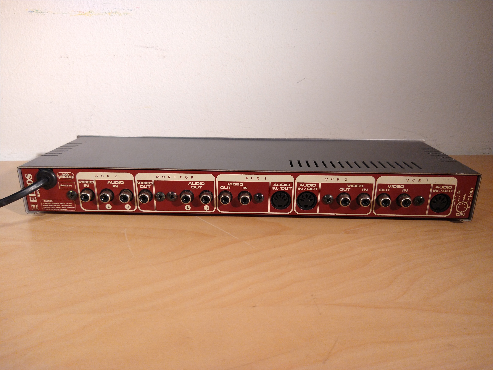
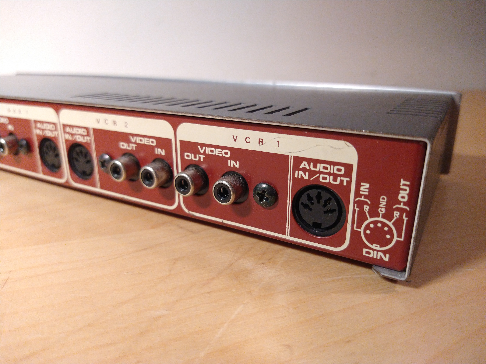
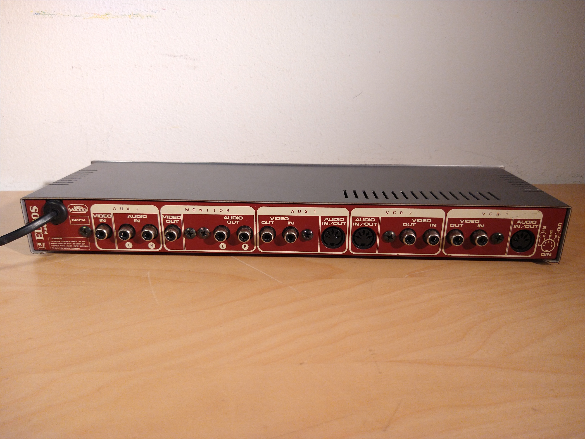
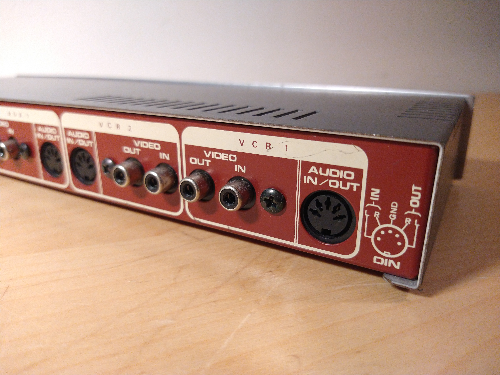
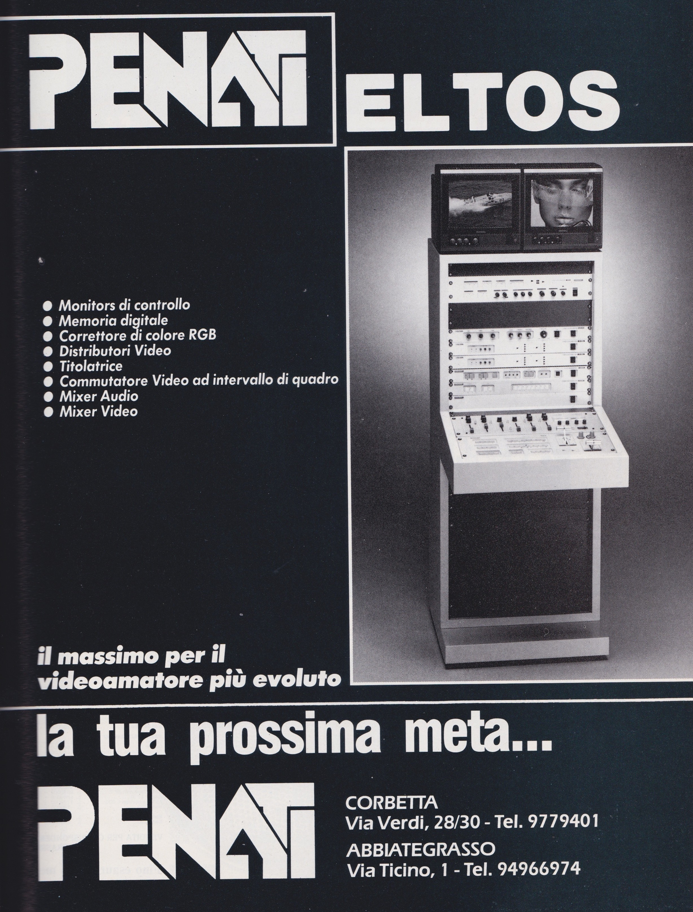

The Eltos V3000 and V4000 video processing units
This page has been replaced by this one. Click on the link to view the newer page with updated info.
Eltos V3000 "video signal conditioning" unit


This device has one audio and video input and 3 A/V outputs, one being labelled as "monitor".
Because of this it can be used as an A/V distribution amplifier, but that's not its intended purpose: this box
lets you modify cearain parameters ("sync level", "video gain", "definition", "color") of the video signal, probably
to correct certain parameters of it if desired.
The difference between the different changes can then be viewed on the "monitor" output, which, thanks to a control
present on the front of the device, can be switched to show either the unmodified input signal or the modified output
signal.
Additionally, there's a control on the front of the device which can switch the audio outputs to mono.
Interestingly enough one of the audio outputs is labelled as "monitor" too - presumably it can switch back to stereo
if the front "monitor" control is set to monitor the input signal even if the audio output is set to mono.
Eltos V4000 video switching unit
 



{kind=link}
{kind=link}
This device lets you connect up to 3 VCRs (via the VCR 1, VCR 2 and AUX 1 input and output ports), a monitor
("monitor" output) and a video input (via the AUX2 input) together, and then it can route video and audio signals
between these various devices.
Annoyingly, some of the inputs seem to use a 5-pin DIN connector for their audio inputs and outputs - I know this was
somewhat common on tape recorders, so maybe some VCRs and VTRs also used it?
In any case, this is definitely not ideal since it means that I have to use a DIN-to-RCA cable to use this unit with
other devices.
More...?
There is basically no info about this company online - the only things I have found are online listings for other video processing devices by them - here's a list of the other products they made that I could find:
- Eltos v2500 video effects unit (seemed like it was also produced in a black case colour... interesting)
- Eltos v5000 camera power supply (seems to have an EIAJ connector) + audio processing unit
- Eltos vd7 audio/video distribution amplifier and noise reduction unit (seems to have a headphone port, but no volume control for it...)
- Eltos mx623 audio mixer (seems to have 2 mic in jacks, a "CD" input, VCR input, phono input and tape in/out ports
Additionally, I've also managed to find this ad by them on an Italian A/V magazine from December 1988:
{kind=link}
(Click on the image to view it in a higher resolution)
The devices shown in that ad seem to be substantially different from the ones I have and, in general, the models I listed
above: seems like these ones were made to be rack-mounted (and they're held by screws), whwereas all the ones I have weren't
made for that (they have no rack-mounting holes) and they're smaller than a standard rack-mount unit (though I also have
no idea if the rack in that ad is a standard size).
However the audio mixer shown in it seems to match with the Eltos mx623 that I listed earlier.
Do you have more info about this company? If you do, please get in touch with me - I'd like to know more about them!